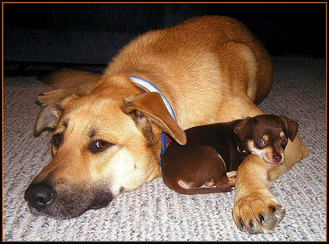

Възпитание и здраве на вашето кученце. Това са най-важните неща, които е необходимо да знаете за грижа към вашето куче
КОЗИНА Редовно решете козината на кучето. - Дългокосместите и полудългокосместите кучета трябва да се разресватежедневно ( йоркширски териер, коли, голдън ретрийвър). При кучета свълниста или къдрава козина( пудел, фокстериер)- два пъти в седмицата, а при късокосместите кучета ( дакели, боксери) се препоръчва да серазресват един път в месеца. Трябва да говорите ласкаво, когато разресвате кученцето и при свършване на процедурата да му дадетете някакво лакомство.
НОКТИ Дълги нокти? - Изрежете ги незабавно! -Независимо дали вашето куче е свикнало да играе на меки или твърдиповърхности , задължително трябва да го научите да подава лапата си, зада може да му бъдат изрязвани ноктите. Най-добре е тази процедура дабъде извършвана от ветеринарен лекар, но ако решите сами да изрязватеноктите на кучето се обърнете към него за съвет. Ветеринарният лекар щеви даде съвет за най-подходящите ножици за нокти и до каква степентрябва да изрязвате ноктите на кучето.
ОЧИ Следете състоянието на очите на кученцето. - Ако в ъглите на очите на кучето има секрет или започне постоянно сълзотечение е необходимо нежно да почистите очите със стерилна кърпичка, напоена в специален разтвор за почистване на очи.
УШИ Редовно проверявайте състоянието на ушите на кученцето и ги чистете при необходимост. - При някои породи се налага отстраняване на космите от вътрешната странана ушите. Това може да бъде извършено от ветеринарен лекар, фризьор или дори от самите вас, след кратко обучение. Ушите трябва да са чисти, без неприятен мирис и без наличието на секрети. Ако ушната кал е малко, то чистенето на ушите не е задължително. Много често, обаче се наблюдава натрупване на голямо количество черна или кафеникава ушна кал в ушите на кученцето, поради което то тръска главата си и се опитва да отстрани този секрет с лапи. Ако ветеринарният лекар постави диагноза краста,трябва стриктно да се придържате към препоръките му и назначенотолечение. Лечението на това заболяване ще отнеме не повече от месец.
ЗЪБИ И УСТА Как да поддържаме добра устна хигиена на моето куче? Зъбната плака е наслагване върху повърхността на зъбите, което се образувамного бързо, особенно при кучетата от дребните породи. След като свободният калций в слюнката се свърже със зъбната плака се образувазъбен камък. - Профилактичното чистене на зъбите трябва да се извършва със специална четка за зъби или марлен тампон. Също така трябва да се използва специална паста за зъби за кучета. Четкането на зъбите е най-добрият профилактичен метод за съхраняване на зравето и белотата на зъбите. - Ако зъбният камък не се отсрани на време е възможно да се стигне до развитието на парадонтоза, а впоследствие дории до загуба на зъби. Премахването на зъбния камък се извършва от ветеринарен лекар с ултразвук като кучето е под обща анестезия.
Независимо от това дали новият ви приятел е малко кученце или възрастно куче, ето някои важни полезни съвети, които могат да ви помогнат да го предпазите от пакости:

> Съхранявайте домакинските почистващи средства и химикали извън неговия достъп.
Ограничете достъпа на кучето до растения, които са опасни за него: коледни звезди, азалии, рододендрони, тръстика, японски тис, олеандър и английски бръшлян, за да споменем само няколко.
Приберете чупливите предмети така, че да не ги достига.
Скрийте или покрийте електрическите шнурове така, че да не може да ги сдъвче.
Съхранявайте на безопасно място антифриз, машинно масло, перилни препарати и градински химикали.
Не оставяйте детски играчки на пода, защото някои части може да са толкова малки, че кучето ви да ги погълне.
Използвайте покривало и/ или защитна ограда, ако имате басейн или джакузи.